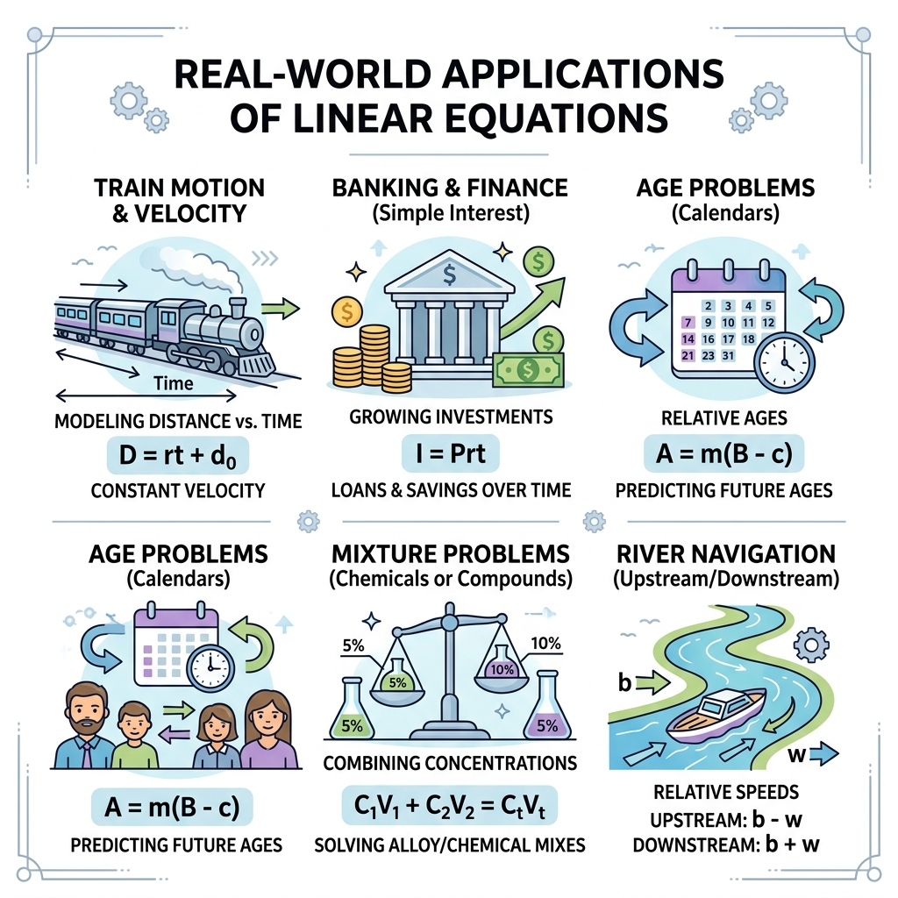

Vardaan Learning Institute
Class 10 Mathematics • Chapter Notes
🌐 vardaanlearning.com
📞 9508841336
PAIR OF LINEAR EQUATIONS IN TWO VARIABLES
Concept
What is a Linear Equation in Two Variables?
An equation of the form $ax + by + c = 0$, where $a, b,$ and $c$ are real numbers, and both $a$ and $b$ are not zero ($a^2 + b^2 \neq 0$), is called a linear equation in two variables $x$ and $y$. Geometrically, it represents a straight line.
Two linear equations in the same two variables $x$ and $y$ are called a Pair of Linear Equations in Two Variables. The most general form is:
$$a_1x + b_1y + c_1 = 0$$
$$a_2x + b_2y + c_2 = 0$$
Where $a_1, b_1, c_1, a_2, b_2, c_2$ are all real numbers and $a_1^2 + b_1^2 \neq 0$, $a_2^2 + b_2^2 \neq 0$.
1. Graphical Method of Solution
A pair of linear equations in two variables will represent two straight lines drawn on the same Cartesian plane. There are only three possibilities for these two lines:
Interactive Graph showing Intersecting Lines ($x+y=5$ and $2x-y=4$)
Conditions for Solvability (Consistency & Inconsistency)
This is the most frequently asked topic in Section A (MCQs) of the CBSE Board Examination.
| Ratio Comparison |
Graphical Representation |
Algebraic Interpretation |
System Nature |
| $\frac{a_1}{a_2} \neq \frac{b_1}{b_2}$ |
Intersecting Lines |
Exactly ONE solution (Unique) |
Consistent |
| $\frac{a_1}{a_2} = \frac{b_1}{b_2} = \frac{c_1}{c_2}$ |
Coincident Lines |
Infinitely Many Solutions |
Consistent (Dependent) |
| $\frac{a_1}{a_2} = \frac{b_1}{b_2} \neq \frac{c_1}{c_2}$ |
Parallel Lines |
No Solution |
Inconsistent |
Practice
Classroom Discussion Problems:
- Find the value of $k$ for which the system $kx - y = 2$ and $6x - 2y = 3$ has a unique solution. (Ans: $k \neq 3$)
- Find $k$ if $x + 2y = 5$ and $3x + ky + 15 = 0$ have infinitely many solutions. (Ans: $k = 6$)
- Check graphically whether the pair of equations $x + 3y = 6$ and $2x - 3y = 12$ is consistent. If so, solve them graphically. (Ans: Intersect at $(6,0)$)
2. Algebraic Methods of Solving
As per the highly rationalised CBSE syllabus, you must master two algebraic methods to solve a system of linear equations. (Note: Cross-Multiplication Method is DELETED).
Method 1: Substitution Method
In this method, we express one variable in terms of the other from one equation and substitute it into the second equation.
- Step 1: Find the value of one variable, say $y$, in terms of $x$ from either equation.
- Step 2: Substitute this value of $y$ into the other equation. This reduces it to an equation in one variable ($x$).
- Step 3: Solve the equation to find $x$.
- Step 4: Substitute the value of $x$ back into the expression from Step 1 to find $y$.
Important Example
Solve by Substitution: $7x - 15y = 2$ and $x + 2y = 3$
Sol: From eq(ii), $x = 3 - 2y$.
Substitute in eq(i): $7(3 - 2y) - 15y = 2$
$21 - 14y - 15y = 2 \implies -29y = -19 \implies y = \frac{19}{29}$
Now, $x = 3 - 2\left(\frac{19}{29}\right) = \frac{87 - 38}{29} = \frac{49}{29}$
Solution: $x = \frac{49}{29}, y = \frac{19}{29}$
Method 2: Elimination Method
This is often the fastest method. We equate the coefficients of one of the variables and add or subtract the equations to "eliminate" that variable.
- Step 1: Multiply both equations by suitable non-zero constants to make the coefficients of either $x$ or $y$ numerically equal.
- Step 2: Add or subtract the equations to eliminate the equated variable.
- Step 3: Solve the resulting equation in one variable.
- Step 4: Substitute this value in any of the original equations to find the other variable.
Practice
Solve by Elimination (RD Sharma Type):
- $3x + 4y = 10$ and $2x - 2y = 2$ (Ans: $x=2, y=1$)
- $ax + by = c$ and $bx + ay = 1 + c$ (Literal Equations - highly expected in Board Exams)
- $\frac{x}{2} + \frac{2y}{3} = -1$ and $x - \frac{y}{3} = 3$ (Ans: $x=2, y=-3$)
3. Master Class: Word Problems Taxonomy
Word problems form the core of Long Answer Type Questions (4 or 5 markers). Below is an exhaustive research-backed categorization of all 12 possible word problem types asked in CBSE, sourced from RS Aggarwal, RD Sharma, and NCERT Exemplar.

Real-world applications of linear equations in diverse scenarios.
Type A: Problems on Ages
Golden Rule: If the present age is $x$, age $n$ years ago is $(x-n)$ and age $n$ years later is $(x+n)$.
- Sample Concept: Let father's present age be $x$ and son's be $y$. "Five years hence, father will be 3 times his son" $\implies (x+5) = 3(y+5)$.
Classroom Practice
1. Ten years ago, a father was twelve times as old as his son and ten years hence, he will be twice as old as his son will be then. Find their present ages.
(Setup: $x-10 = 12(y-10)$ and $x+10 = 2(y+10)$ $\rightarrow$ Ans: Father=34, Son=12)
2. The sum of the present ages of a father and his son is 99 years. When the father was as old as his son is now, his age was four times age of the son at that time. Find their present ages.
(Setup: $x+y=99$ and $x - (x-y) = 4[y-(x-y)]$ $\rightarrow$ Ans: Father=54, Son=45)
Type B: Problems on Fractions
Golden Rule: Always let the numerator be $x$ and the denominator be $y$. The fraction is $\frac{x}{y}$.
Classroom Practice
1. A fraction becomes $\frac{1}{3}$ when 1 is subtracted from the numerator and it becomes $\frac{1}{4}$ when 8 is added to its denominator. Find the fraction.
(Setup: $\frac{x-1}{y} = \frac{1}{3}$ and $\frac{x}{y+8} = \frac{1}{4}$ $\rightarrow$ Ans: $\frac{5}{12}$)
Type C: Problems on Two-Digit Numbers
Golden Rule: Let the unit digit be $y$ and tens digit be $x$. The original number is $10x + y$. The number obtained by reversing the digits is $10y + x$.
Classroom Practice
1. The sum of a two-digit number and the number obtained by reversing the digits is 66. If the digits of the number differ by 2, find the number. How many such numbers are there?
(Setup: $(10x+y) + (10y+x) = 66 \implies x+y=6$. Also $x-y=2$ OR $y-x=2$. $\rightarrow$ Ans: 42 or 24. Two such numbers.)
Type D: Fixed & Variable Charges (Commercial)
Golden Rule: Let the fixed charge be $Rs. x$ and the charge per unit (day/km/hostel meal) be $Rs. y$. Total Cost = $x + (\text{Number} \times y)$.
Classroom Practice
1. A lending library has a fixed charge for the first three days and an additional charge for each day thereafter. Saritha paid Rs 27 for a book kept for 7 days, while Susy paid Rs 21 for the book she kept for 5 days. Find the fixed charge and the charge for each extra day.
(Setup: $x + 4y = 27$ and $x + 2y = 21$ $\rightarrow$ Ans: Fixed=Rs 15, Extra=Rs 3/day)
Type E: Time, Distance, Speed & Trains
Golden Rule: $Time = \frac{Distance}{Speed}$. If two bodies move in the same direction, relative speed is $(u-v)$. If they move in opposite directions, relative speed is $(u+v)$.
Classroom Practice
1. Places A and B are 100 km apart on a highway. One car starts from A and another from B at the same time. If they travel in the same direction, they meet in 5 hours. If they travel towards each other, they meet in 1 hour. What are speeds?
(Setup: $5x - 5y = 100$ and $x + y = 100$ $\rightarrow$ Ans: 60 km/h and 40 km/h)
2. A train covered a certain distance at a uniform speed. If the train would have been 10 km/h faster, it would have taken 2 hours less. If it were slower by 10 km/h, it would have taken 3 hours more. Find the distance.
(Setup: Let speed=$x$, time=$y$. Dist=$xy$. $(x+10)(y-2)=xy$ and $(x-10)(y+3)=xy$ $\rightarrow$ Ans: 600 km)
Type F: Boats and Streams
Golden Rule: Let speed of boat in still water be $x$ km/h and speed of stream be $y$ km/h. Speed Downstream $= (x+y)$, Speed Upstream $= (x-y)$.
Classroom Practice
1. A boat goes 30 km upstream and 44 km downstream in 10 hours. In 13 hours, it can go 40 km upstream and 55 km downstream. Determine the speeds.
(Setup: $\frac{30}{x-y} + \frac{44}{x+y} = 10$ and $\frac{40}{x-y} + \frac{55}{x+y} = 13$ $\rightarrow$ Ans: Boat=8 km/h, Stream=3 km/h)
Type G: Work, Energy & Time
Golden Rule: If a man takes $x$ days to finish a work, his 1 day's work is $\frac{1}{x}$. If $y$ women finish it in $y$ days, 1 woman's 1 day's work is $\frac{1}{y}$.
Classroom Practice
1. 2 women and 5 men can together finish an embroidery work in 4 days, while 3 women and 6 men can finish it in 3 days. Find the time taken by 1 woman alone, and 1 man alone.
(Setup: $\frac{2}{x} + \frac{5}{y} = \frac{1}{4}$ and $\frac{3}{x} + \frac{6}{y} = \frac{1}{3}$ $\rightarrow$ Ans: Woman=18 days, Man=36 days)
Type H: Geometry & Mensuration
Golden Rule: Area of rectangle = $l \times b$. For a cyclic quad, sum of opposite angles = $180^\circ$.
Classroom Practice
1. The area of a rectangle gets reduced by 9 sq units, if length is reduced by 5 and breadth is increased by 3. If we increase length by 3 and breadth by 2, area increases by 67 sq units. Find dimensions.
(Setup: $(x-5)(y+3) = xy - 9$ and $(x+3)(y+2) = xy + 67$ $\rightarrow$ Ans: L=17, B=9)
Type I: Numbers and Ratios (Basic Number Relations)
Golden Rule: Let the two numbers be $x$ and $y$. Translate words like "sum", "difference", "times", or "ratio" directly into algebraic operations.
Classroom Practice
1. The difference between two numbers is 26 and one number is three times the other. Find them.
(Setup: $x - y = 26$ and $x = 3y$ $\rightarrow$ Ans: 39 and 13)
2. Two numbers are in the ratio 5:6. If 8 is subtracted from each of the numbers, the ratio becomes 4:5. Find the numbers.
(Setup: $\frac{x}{y} = \frac{5}{6}$ and $\frac{x-8}{y-8} = \frac{4}{5}$ $\rightarrow$ Ans: 40 and 48)
Type J: Coins and Denominations (Currency)
Golden Rule: Let the number of coins/notes of the first denomination be $x$ and the second be $y$. Total items = $x + y$. Total Value = $(\text{Value}_1 \times x) + (\text{Value}_2 \times y)$.
Classroom Practice
1. Meena went to a bank to withdraw Rs 2000. She asked the cashier to give her Rs 50 and Rs 100 notes only. Meena got 25 notes in all. Find how many notes of Rs 50 and Rs 100 she received.
(Setup: Total notes $x + y = 25$. Total value $50x + 100y = 2000$ $\rightarrow$ Ans: 10 notes of Rs 50, 15 notes of Rs 100)
Type K: Profit, Loss, and Sales (Commercial)
Golden Rule: Let Cost Price (CP) be $x$ and $y$. Profit = $\frac{P\%}{100} \times CP$. Selling Price (SP) = $CP + Profit$.
Classroom Practice
1. A man sold a chair and a table together for Rs 1520, thereby making a profit of 25% on the chair and 10% on the table. By selling them together for Rs 1535, he would have made a profit of 10% on the chair and 25% on the table. Find the CP of each.
(Setup: $1.25x + 1.10y = 1520$ and $1.10x + 1.25y = 1535$ $\rightarrow$ Ans: Chair = Rs 600, Table = Rs 700)
Type L: Mixtures and Solutions (NCERT Exemplar Level)
Golden Rule: Let $x$ liters of the first mixture and $y$ liters of the second mixture be taken. First equation is total volume. Second equation tracks the volume of the specific solute (acid/copper/etc.) transferred.
Classroom Practice
1. A chemist has one solution which is 50% acid and a second which is 25% acid. How much of each should be mixed to make 10 litres of a 40% acid solution?
(Setup: Total Vol $x + y = 10$. Acid Vol $0.50x + 0.25y = 0.40(10)$ $\rightarrow$ Ans: 6L of 50%, 4L of 25%)